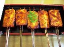
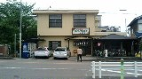
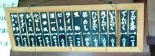
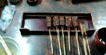

Free talk 雑談 .
（370）豆腐田楽
田楽（でんがく＝豆腐田楽）といえば、昔からの庶民の食べ物。ネタには蒟蒻（こんにゃく）や里芋（さといも）なども使われるが、基本は豆腐（数センチ四方にカットした豆腐を串にさして焼き、味噌で味をつけたもの）。

むかしは縁日などでよく見かけたが、最近は新規食材押されて めったに見かけなくなった。そんな状況のなかで、愛知県の犬山市に豆腐田楽の専門店がある。で 女房のルーツが、その犬山市。そこで先日、その店に行ってきた。

何ということのない構えであるが、奥行きがかなりある。出かけた日は、ちょうど祭日。大入り満員で、しばらく順番待ち。ようやく着座して、座敷に掲示してある お品書きをみる。といっても、そこには豆腐田楽が一品 掲示してあるのみ。ご飯も菜飯丼（なめしどんぶり）一品のみで、あとはビール、酒のみ。まるでもう（別にメニューの必要はないのでは...）と思うくらい(^-^；

さっそく注文し、たらふく食べてきた。

それにしても この一品メニューだけでよくやってるな と思ったが、かなり遠方からも客が押し寄せ、連日 大繁盛とか。いや、結構な話。